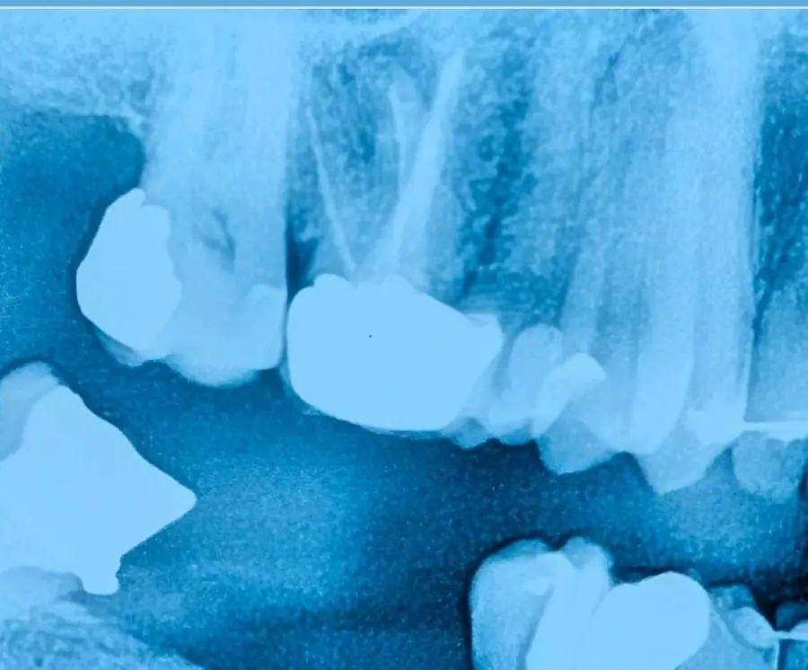

نسخه استخراجشده؛ ترجمه یا تأیید علمی انجام نشده است. وضعیت: captured
بیمار برای طرح درمان دندان ۶ بالا سمت راست آمده است. دندان روکش دارد و شواهدی از مشکل زیر آن، از جمله نیاز به درمان مجدد ریشه، دیده میشود.

در نگاه اول مسیر روشن است: درمان مجدد ریشه، بیلدآپ و روکش جدید. اما پرسش اصلی این است: آیا واقعاً میدانیم با چه دندانی طرفیم؟
روکش موجود وضعیت واقعی دندان را پنهان میکند. حتی پس از برداشتن روکش هم، پوسیدگیهای زیرین ممکن است تصویر نادرستی از مقدار نسج باقیمانده بدهند؛ پوسیدگی نمیگذارد ببینی چه مقدار از ساختار دندان سالم و قابل اتکاست.
تا اکسپوژر کامل، هر طرح درمانی یک حدس است، و هر قولی دربارهی «نگهداشتن دندان» قولی ناسنجیده.
در این نقطه پروگنوز واقعی مشخص میشود و تصمیم حفظ یا جایگزینی بر پایهی واقعیت گرفته میشود، نه حدس. حذف کامل پوسیدگی در اینجا فقط درمان نیست؛ یک اقدام تشخیصی است.
فایدهی این رویکرد: از درمانهای غیرضروری و صرف هزینه برای دندانی با پیشآگهی ضعیف جلوگیری میکند. گاهی تشخیص از دل برداشتن لایههایی به دست میآید که حقیقت را پنهان کردهاند.
نوع سؤال: ساخت کلمه · 6 خانه
حروف منبع: ت · ش · ی · ی · ص · خ